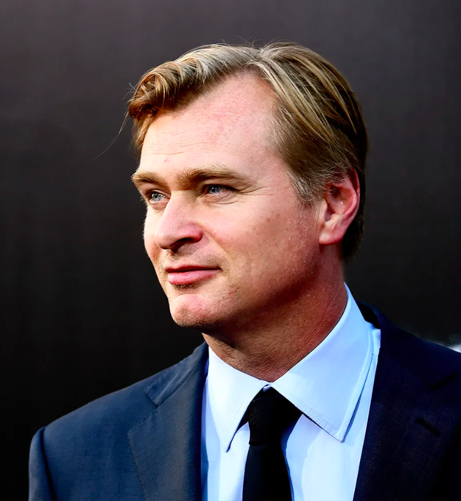
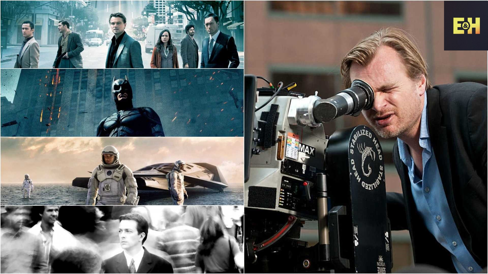
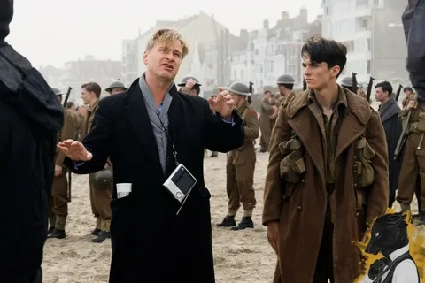
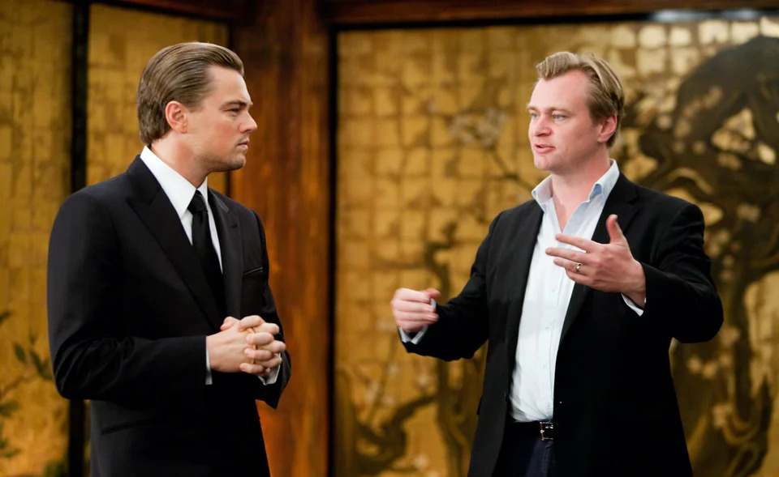
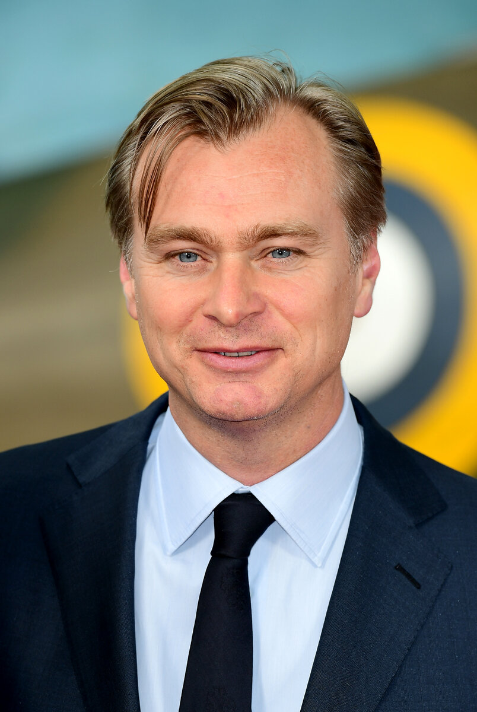

Фильмы Кристофера Нолана
Вниз
Краткая биография
Кристофер Нолан — британский режиссёр, сценарист и продюсер, известный своими интеллектуальными и зрелищными фильмами.

Известные фильмы
- Престиж (2006)
- Тёмный рыцарь (2008)
- Начало (2010)
- Интерстеллар (2014)
- Довод (2020)
- Оппенгеймер (2023)

Интересные факты
- Кристофер Нолан не учился на режиссера в киношколе. Он изучал английскую литературу в Университете Лондона и
начал заниматься фильмами самостоятельно, снимая короткометражки с бюджетами в несколько сотен долларов.
- Фильм «Начало» был вдохновлен сновидениями Нолана.
- На момент его выпуска, Тёмный рыцарь (2008) был одним из самых дорогих фильмов своего времени, а также
одним из самых кассовых, заработав более 1 миллиарда долларов по всему миру.
-
Нолан известен тем, что часто использует практические эффекты и реальные съемки, вместо того чтобы полагаться на компьютерную графику.
Например, в фильме Интерстеллар для создания черной дыры были использованы реальная компьютерная симуляция и научные данные.
-
Нолан часто работает с одними и теми же актерами. Среди них — Кристиан Бэйл, Майкл Кейн, Том Харди, Киллиан Мёрфи и Гари Олдман.
Это сотрудничество позволило создать уникальную атмосферу в фильмах.

Фильмы и их сборы и оценка IMDb
| Фильм |
Год выпуска |
Кассовые сборы (млн $) |
Оценка IMDb |
| Престиж |
2006 |
109.7 |
8.5 |
| Тёмный рыцарь |
2008 |
1004.9 |
9.0 |
| Начало |
2010 |
836.8 |
8.8 |
| Интерстеллар |
2014 |
677.5 |
8.6 |
| Довод |
2020 |
363.7 |
7.4 |
| Оппенгеймер |
2023 |
937.6 |
8.8 |

Больше информации о Кристофере Нолане можно найти на Wikipedia.

Вверх